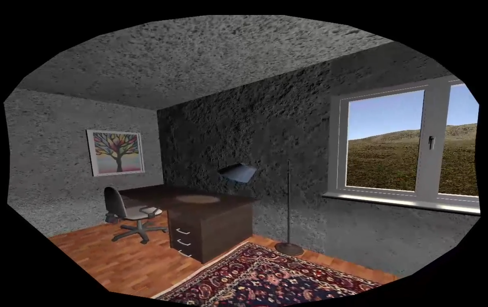

Non-Euclidean Spaces Demo
Non-Euclidean Spaces are spaces that don't follow the 'normal' laws of physics. In VR they can be used in non-teleporting experiences to create the illusion of a bigger virtual space compared to the real space. There are a lot of different strategies on how to achieve that illusion and one of them maps multiple similar virtual rooms onto one real room. The virtual rooms are connected through a small corridor or something similar that lets the user 'forget' the last space before walking into the next one. My demo showed that a user has a better sense of orientation and feels more immersed when walking around a non-euclidean space, compared to using a teleportation mechanic.